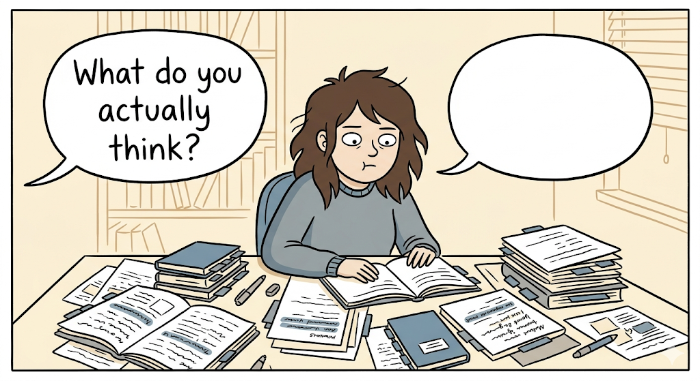
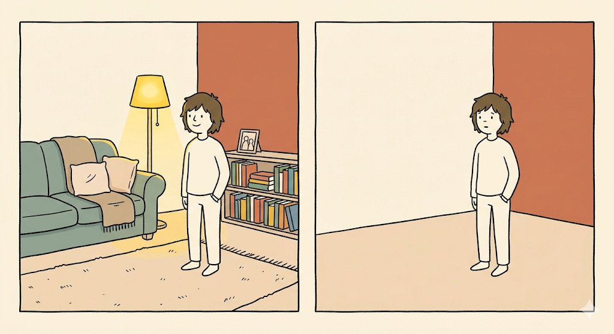
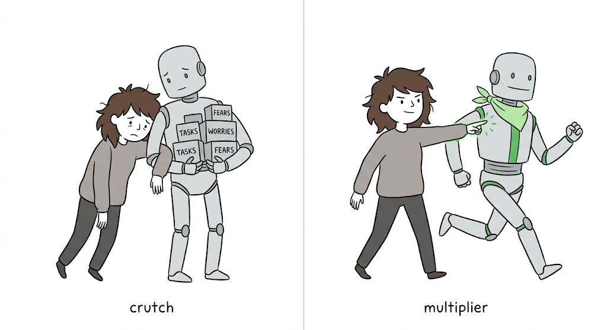

读了很多，一周后却说不出观点
原文小标题：开篇（原文无小标题）
作者开篇说明，这五个问题和她此前写过的《阅读如何改变思考》《六个拿回思考力的习惯》是同一套“从输入走向判断”的方法。
她描述了一个很多人熟悉的场景：两小时里打开 4 篇文章、播了一集播客，Notion 里塞满她觉得值得存下来的句子。这些内容在页面上看起来有用，在脑袋里也感觉有用。
一周后，有人问她对大家都在讨论的那个趋势怎么看。她记得自己读过，几乎能想象出那些分页的样子，可是想抓出一个真正的观点时，脑中没有扎实的知识网络可以调用——没有清楚的立场，只有几个听起来熟悉、却拼不起来的片段。

她想要的其实很简单：吸收的东西能真正改变思考方式，帮她说得更清楚、做出更好的决策、更快理解下一件事。一开始她怪自己记性差，以为需要更好的笔记、更多复习或一套更干净的系统，后来才发现原因更深。
我是在跟着素材本身的顺序走，而不是建立我自己的理解顺序。
看清这一点后，代价就不只是忘掉几个想法：一个人可以花好几年吸收聪明的素材，轮到自己思考时依然没把握。
以为在学习，其实是被素材牵着走
原文小标题：我以为自己在学习，其实只是被素材牵着走
回头检视那次学习，她发现模式很简单：照着顺序读，让素材决定什么重要。一篇文章带到另一篇，一集播客变成一条笔记，一句引用看起来值得存下来。身在其中时一切都说得通——这正是陷阱难以察觉的原因：做的时候，它感觉像进步。
问题在于她从没让这些素材回答同一个清楚的问题。文章有文章的论点，播客有播客的重点，笔记里只是装着两边的碎片。因为没有先选定问题，每个来源都显得值得保存。
我有信息，但我没有结构。
阅读、画重点、做笔记、把素材读完，最后留下“花过时间”的证明，是多数人被训练出来的习惯。可是重点、分页、引用和笔记都在，并不代表底层知识架构也在建立。素材的顺序悄悄变成了她的思考顺序：她说得出每个来源讲了什么，却说不出它们放在一起意味着什么。
于是下一步变得清楚：在来源告诉她该注意什么之前，她必须先决定自己在找什么。
先定问题，再用五格框架去读
原文小标题：先抓住问题，才不会被信息淹没
她不再问“接下来该读什么”，而是问“我到底想理解什么”。理由是：来源的编排服务于作者的论证，而不是你的理解。解法是改变由谁主导思考。
旧的学习流程是这样的：
- 打开文章、书、播客或报告；
- 跟着它的顺序走；
- 画下感觉重要的地方；
- 把有用的想法存进笔记；
- 希望理解之后会自己出现。
这个过程让人感觉很好，因为它留下了证据：笔记、引用、重点和一串读过的东西。但能证明花过时间，不等于能证明懂了什么。她打了个比方：就像不知道要做什么菜就去买菜，带回一堆好食材，真要下厨时却没有哪几样明确属于同一道菜。
新的顺序是五个问题：
- 问题：这份素材想解决什么？
- 主张：它给出的最强答案是什么？
- 证据：是什么让这个答案可信？
- 反方观点：它在哪里可能不完整、错误，或取决于情境？
- 应用：我能在哪里不重新打开素材就用上它？
跟着来源走时，大脑多半只是在反应：“这听起来很重要”“这看起来很有趣”“我应该存下来”。从框架出发时，大脑一开始就得组织——每个想法都要有作用：要么帮忙定义问题，要么支持主张，要么挑战论点，要么指出可以用在哪里。
框架把阅读变成分类，而不是收集。
她把它叫作“以后用得上的框架”，对应她一直没通过的测试：关掉文章、收好笔记之后，还能不能用这个想法？所以打开任何东西之前，她先用自己的话写下问题——不必完美，只需要一个目标。没有目标时，一切看起来都有用。
她举例：读 AI agents 时，先问“为什么 agents 在任务变复杂时会崩溃？”这样一来，来源不再是一长串有趣的东西：一篇文章给出主张，一个 benchmark（基准测试）给出证据，一集播客给出反方意见，一个案例研究说明可以用在哪里。来源不再是地图，而是原材料。
带走的东西也变了：以前她能告诉你自己读了什么，后来能告诉你自己怎么想；以前想法住在笔记里，后来能自己带着走。
看过不等于拥有：脆弱知识
原文小标题：最危险的错觉，是你以为自己懂了
她给旧流程的产物起了个名字：脆弱知识——因为曾经看过所以感觉熟悉的信息，一旦必须使用就会散掉。
她的比喻是为拍照临时租家具布景：一天之内房间看起来很完整，沙发、灯、桌子样样到位，但没有一样真正属于你，布景一撤，房间又空了。

学习也一样：笔记满满、重点干净、想法感觉很接近，在学习当下一切都显得完整；等到有人要你使用那份知识，你才发现自己只是把房间布置好了，从来没有真正搬进去。看见一个想法感觉很好，拥有它则需要努力。
真正的检验是使用：
- 你能在压力下想起这个想法吗？
- 能把它用在新的地方吗？
- 能不重新打开素材就解释它吗？
她又用举重作比：看别人举重，动作显得很简单，但身体只有在自己承受重量时才会变强。辨认之所以顺，是因为素材替你扛了大部分重量；提取之所以难，是因为现在得自己扛。
比较困难的那一刻，才是学习开始发生的地方。
越顺的学习，越容易留下空心知识
原文小标题：越顺的学习，越容易留下空心的知识
奇怪的是，脆弱知识在建构时感觉很扎实。研究给了她一套语言，去描述一件她感受得到却说不出的事：学习过程可以感觉很好，真正的学习却仍然很弱。
她引用 Robert Bjork：重读、画重点、重新整理笔记让人觉得很有效率，因为素材变得熟悉；这种熟悉感制造出愉快的错觉——当下表现很好，却很少留下以后能用的东西。原文把这个更大的陷阱译作“不受欢迎的轻松”。
她再借 John Sweller 的认知负荷研究解释“脑袋当机”：大脑一次只能在工作记忆里保留少量内容，考试、会议、决策或被人追问想法时，压力一加入就会超载。如果那次学习几乎没把内容放进长期记忆，就没有多少稳定材料可以提取。
那场学习给了我“我懂了”的感觉。它没有给我存取能力。
所以解法不能是更多轻松，而必须是正确种类的努力。
让你变强的，是那一点吃力感
原文小标题：真正让你变强的，是那一点吃力感
既然容易的学习会制造错觉，解法就要加入正确种类的摩擦，让大脑更早开始工作。
Henry Roediger 和 Jeffrey Karpicke 展示了最简单的方法之一：提取练习——不看笔记回想，不看内容解释，把想法用在新的地方。在他们的研究里，练习提取的学生比单纯再读一遍的学生，之后记得更多。
比较困难的活动建立了更强的记忆。比较容易的活动主要建立了信心。
这种有用的吃力感就是“理想困难”：一种让大脑练习你想建立的那项能力的努力。她用学骑自行车类比：摇晃看似是问题，其实是学会的一部分；有人一路扶稳车会骑得更轻松、更快，但平衡感是在一次次修正中练出来的。
一次好的学习应该比被动阅读稍微难一点：停下来、关掉来源、试着解释，然后注意到想法在哪里断掉。那一刻不方便，却也是知识开始属于你的地方。
所以更好的检验不是“我读完了吗”，而是：
- 明天不重新打开笔记，我还能用这个吗？
- 我能把它用在一个从没见过的情境里吗？
- 知道这件事，会让我更容易学会下一件事吗？
如果答案很弱，说明那次学习产出的是活动，不是知识。读更多只会增加素材，更好看的笔记只会让素材看起来更整齐。
合上笔记，用五句话讲清楚
原文小标题：关上笔记后，才知道想法是不是你的
检验方法很简单：合上笔记，用五句话解释这个想法。这样做更慢，有时也很烦，她会很想立刻重新打开笔记，因为能感觉到缺口。但缺口很有用：它们标出了学习在哪里停止、熟悉感从哪里开始。
如果不看笔记就很难讲清下面这些，这个想法就还需要更多功夫：
- 问题
- 主张
- 证据
- 反方观点
- 一个应用
她处理过它，看到时也认得出来，可笔记一拿走，信心就跟着消失。
处理让想法感觉熟悉。学习让想法变得可用。
到后来，旧方法失去了吸引力，因为它总给出同样的结果：满满的笔记、薄弱的回想、大量的活动，真正能用的东西却很少。
AI 会放大判断力，也会暴露空洞
原文小标题：AI 会放大你的判断力，也会暴露你的空洞
这件事过去像是个人的生产力问题，现在正在变成判断力问题。任何能查到的东西，现在都能让 AI 生成：摘要、定义、比较、例子、分步解释。你可以在午饭前总结完五篇文章，却仍然不知道自己怎么想。
即使在 AI 之前，表层知识也老化得很快。她引用 Samuel Arbesman 普及的“事实半衰期”概念：我们知道的事会随时间改变，有些领域衰退得更快。原文给出的数字是：1930 年一个学位所含知识的半衰期是 35 年，1960 年代是 10 年，现在是 2.5 到 5 年，而 AI 让这件事发生得更快。
她的推论是：如果一条好的提示词就能提取出你一次学习建立的同样东西，那次学习给你的是依赖，而不是优势。更大的问题是判断力——AI 暴露的不只是你不知道什么，还有你能否分清好答案和有说服力的答案。没有知识结构，就缺少评估 AI 输出的基础：它听起来很自信，你就接受了。
更强的基础能帮你跟上变化：读新闻、用 AI，同时保有自己的判断。问题于是从“我能记住这个吗”变成“我是否在建立一个 AI 能在其上发挥作用的东西”。
脆弱知识会把 AI 变成拐杖。耐用知识会把 AI 变成倍增器。
差别在底下的结构。这也把整件事带回最初的问题：重点不是更好的笔记，而是更好的思考。

带走的不是笔记，而是更可靠的自己
原文小标题：最后，你要带走的不是笔记，而是一个更可靠的自己
这件事的重要性远超做笔记。学习不是为了收集信息，而是为了在需要思考、决定、解释或反驳的时刻，能信任自己的脑袋。脆弱知识的代价很安静：你可以看起来信息量很大，却没有任何稳定可用的东西，直到那个时刻到来，弱点才暴露。
当她不再问“我读完这个了吗”，而是问“我能用这个来思考吗”，学习才开始改变。
AI 可以给你解释。它不能替你决定你正在试图理解什么。
她的收尾建议：下次打开任何东西准备学习时，先搭好框架——问题、主张、证据、反方观点、应用——然后再读，用内容去填这个结构。下次有人问你怎么想，你不会想伸手去拿笔记，而会抓住一个已经属于你的想法。重点不是读完来源，而是离开时，脑袋已经换了一种方式运作。
评论区摘录
学习时的陷阱与盲点，很好的提醒！
感谢你！要先知道自己想解决什么问题，再继续跟着好奇心学习。